writing
==========================================================================================
2024
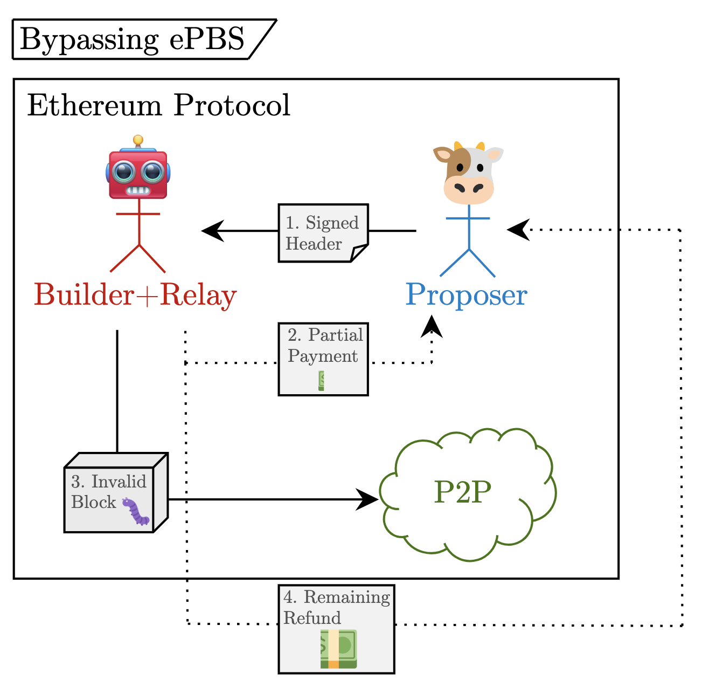→ Consider the ePBS
by Mike
https://notes.ethereum.org/@mikeneuder/consider-the-epbs
------------------------------------------------------------------------------------------

→ Inclusion lists: execution, consensus, & engine spec overview
by Mike
https://notes.ethereum.org/@mikeneuder/il-spec-overview
------------------------------------------------------------------------------------------

→ Unconditional inclusion lists
by Mike and Toni
https://ethresear.ch/t/unconditional-inclusion-lists/18500
------------------------------------------------------------------------------------------
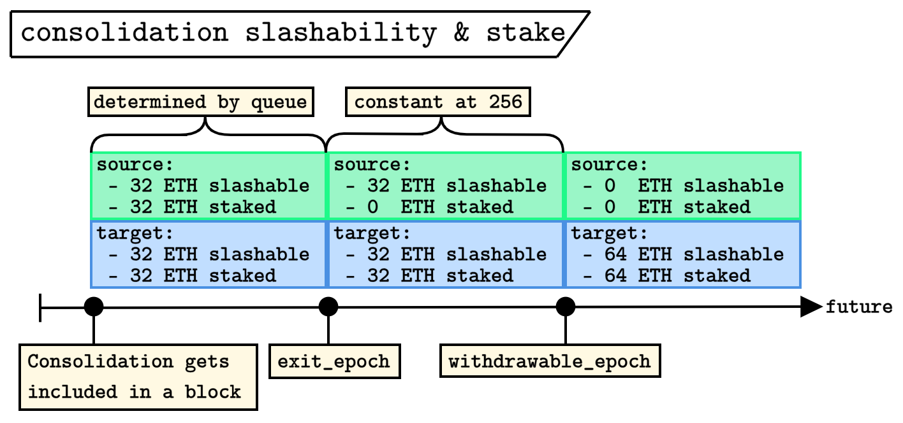→ Validator consolidation in EIP-7251
by Francesco & Mike
https://notes.ethereum.org/@fradamt/maxeb-consolidation
==========================================================================================
2023

→ Execution tickets
by Justin and Mike
https://ethresear.ch/t/execution-tickets/17944
------------------------------------------------------------------------------------------

→ The persistence of timing games
by Caspar and Mike
https://ethresear.ch/t/timing-games-implications-and-possible-mitigations/17612
------------------------------------------------------------------------------------------
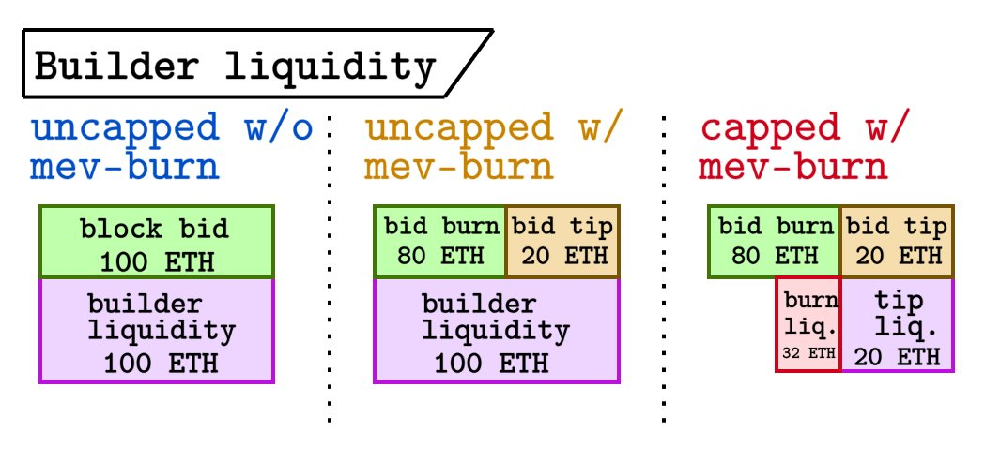→ Dr. changestuff or: how i learned to stop worrying and love mev-burn
by Mike, Toni, and Justin
https://ethresear.ch/t/dr-changestuff-or-how-i-learned-to-stop-worrying-and-love-mev-burn/17384
------------------------------------------------------------------------------------------
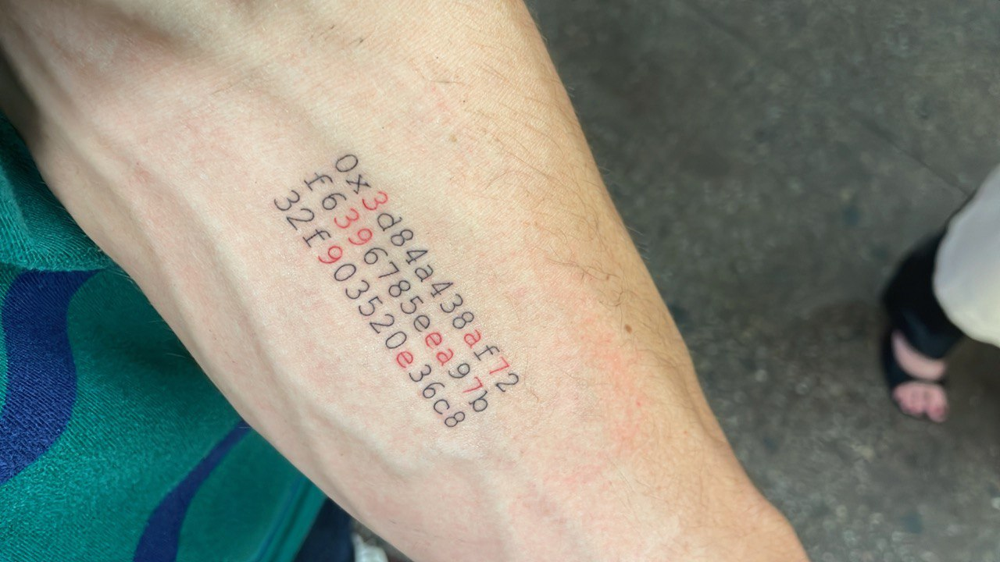→ On 0x3d84a438af72f6396785eea97b32f903520e36c8
by Mike
https://github.com/michaelneuder/michaelneuder.github.io/blob/master/public/on0x3d84.pdf
------------------------------------------------------------------------------------------
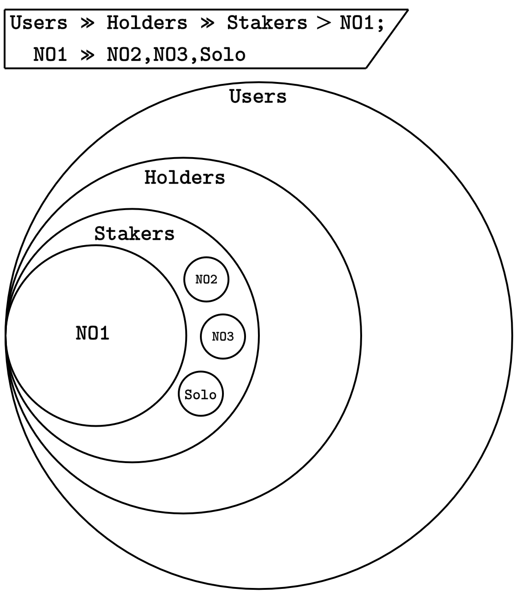→ A set-theoretic view of Ethereum coteries
by Mike
https://notes.ethereum.org/@mikeneuder/set-theoretic-ethereum
------------------------------------------------------------------------------------------
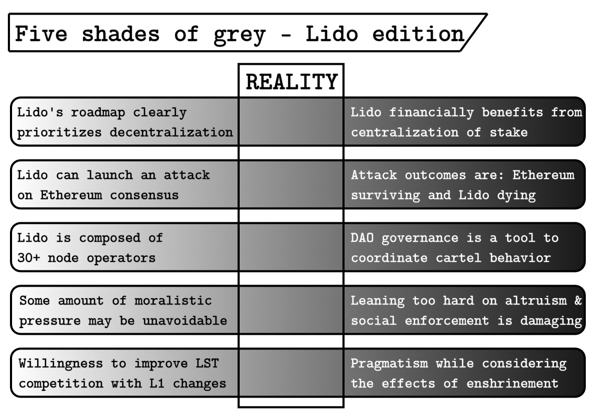→ Magnitude and direction of Lido attack vectors
by Mike
https://notes.ethereum.org/@mikeneuder/magnitude-and-direction
------------------------------------------------------------------------------------------
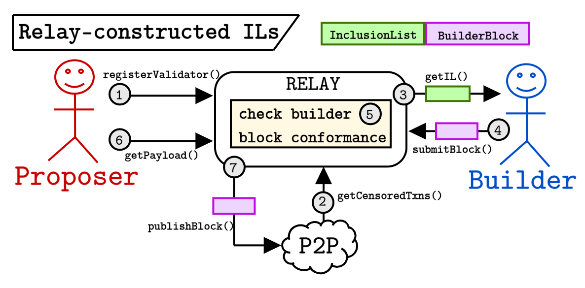→ Resistance is ~not futile; CR in mev-boost~
by Mike
https://ethresear.ch/t/resistance-is-not-futile-cr-in-mev-boost/16762
------------------------------------------------------------------------------------------
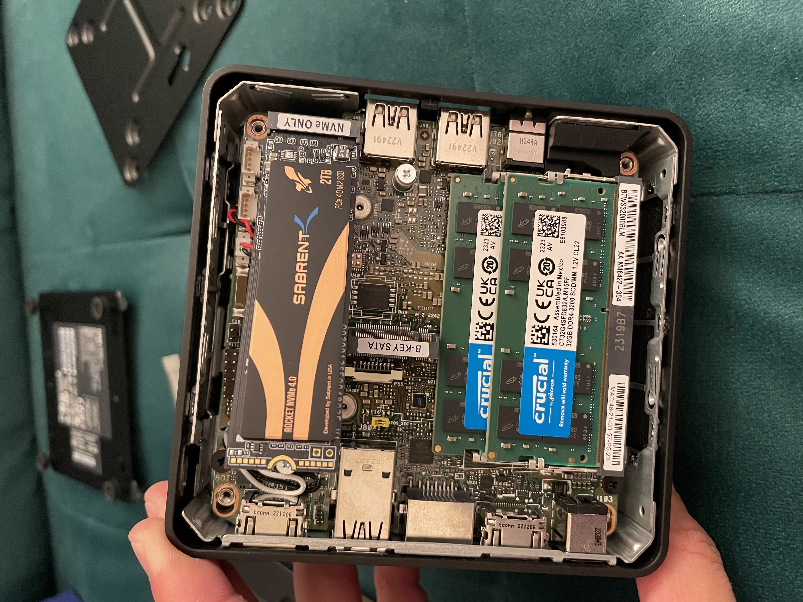→ solo-staking rigt
by Mike
https://notes.ethereum.org/@mikeneuder/solo-staking-rig
------------------------------------------------------------------------------------------

→ ePBS – the infinite buffet
by Mike
https://notes.ethereum.org/@mikeneuder/infinite-buffet
------------------------------------------------------------------------------------------
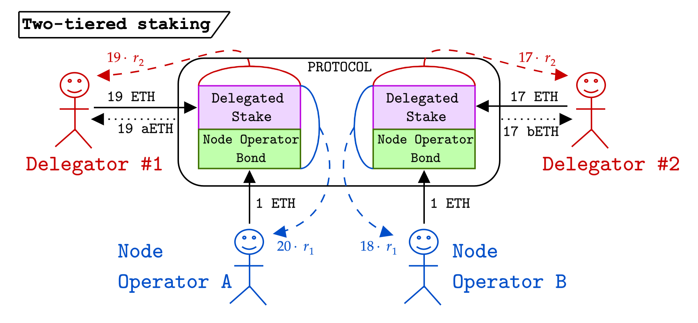→ Can we find Goldilocks? Musings on “two-tiered” staking, a native Liquid Staking Token design.
by Mike
https://notes.ethereum.org/@mikeneuder/goldilocks
------------------------------------------------------------------------------------------

→ Slashing penalty analysis; EIP-7251
by Mike and Barnabé
https://ethresear.ch/t/slashing-penalty-analysis-eip-7251/16509
------------------------------------------------------------------------------------------

→ No free lunch – a new inclusion list design
by Vitalik and Mike
https://ethresear.ch/t/no-free-lunch-a-new-inclusion-list-design/16389
------------------------------------------------------------------------------------------
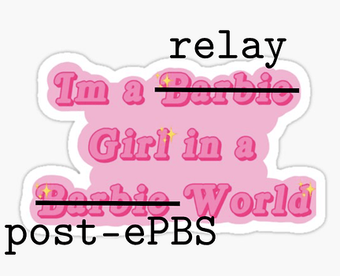→ Relays in a post-ePBS world
by Mike, Jon, Hasu, Tomasz, Chris, and Toni
https://ethresear.ch/t/relays-in-a-post-epbs-world/16278
------------------------------------------------------------------------------------------
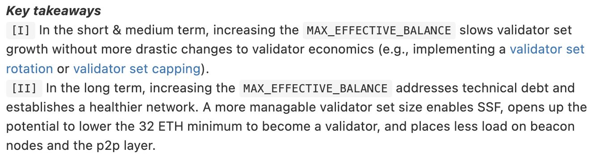→ FAQ on EIP-7251; Increasing the MAX_EFFECTIVE_BALANCE
by Mike, Francesco, Dapplion, and Mikhail
https://notes.ethereum.org/@mikeneuder/eip-7251-faq
------------------------------------------------------------------------------------------
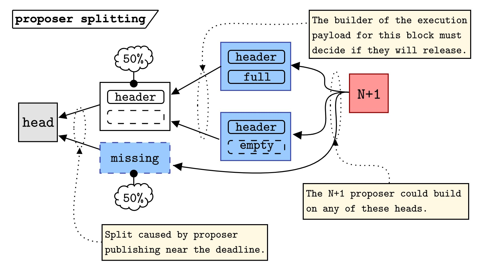→ Payload-timeliness committee (PTC) – an ePBS design
by Mike Neuder and Francesco D'Amato based on discussions with Potuz and Terence Tsao
https://ethresear.ch/t/payload-timeliness-committee-ptc-an-epbs-design/16054
------------------------------------------------------------------------------------------
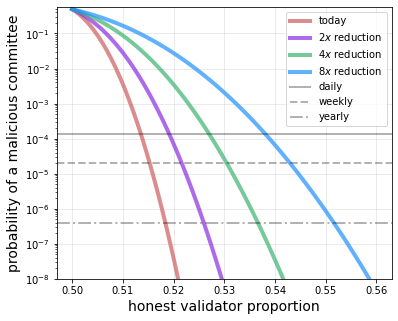→ Increase the MAX_EFFECTIVE_BALANCE – a modest proposal
by Mike Neuder, Francesco D'Amato, Aditya Asgaonkar, and Justin Drake
https://ethresear.ch/t/increase-the-max-effective-balance-a-modest-proposal/15801
------------------------------------------------------------------------------------------

→ Why enshrine Proposer-Builder Separation? A viable path to ePBS
by Mike Neuder and Justin Drake
https://ethresear.ch/t/why-enshrine-proposer-builder-separation-a-viable-path-to-epbs/15710
------------------------------------------------------------------------------------------

→ Bid cancellations considered harmful
by Mike Neuder and Thomas Thiery
https://ethresear.ch/t/bid-cancellations-considered-harmful/15500
------------------------------------------------------------------------------------------
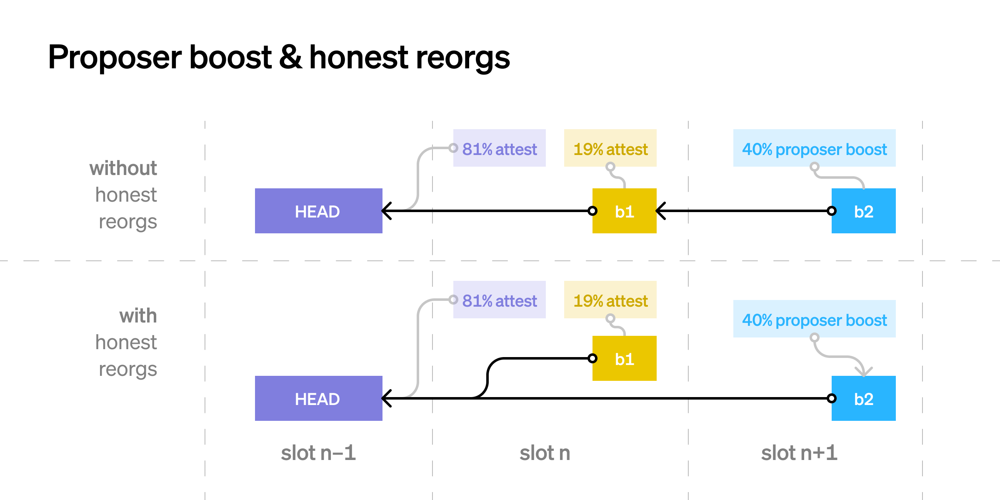→ Time, slots, and the ordering of events in Ethereum Proof-of-Stake
by Georgios Konstantopoulos and Mike Neuder
https://www.paradigm.xyz/2023/04/mev-boost-ethereum-consensus
------------------------------------------------------------------------------------------

→ Optimistic relays and where to find them
by Ankit Chiplunkar and Mike Neuder
https://frontier.tech/optimistic-relays-and-where-to-find-them
------------------------------------------------------------------------------------------

→ Equivocation attacks in mev-boost and ePBS
by Francesco D'Amato and Mike Neuder
https://ethresear.ch/t/equivocation-attacks-in-mev-boost-and-epbs/15338
------------------------------------------------------------------------------------------
→ Impact of the Prysm invalid signature bug on the mev-boost ecosystem
by Mike Neuder and Chris Hager
https://notes.ethereum.org/@mikeneuder/ryJGpiBz2
------------------------------------------------------------------------------------------

→ An optimistic weekend
by Mike Neuder, Niclas Blomberg, and Justin Drake
https://github.com/ultrasoundmoney/mev-boost-relay/blob/prod-optimistic-relaying/docs/optimistic/an-optimistic-weekend.md
------------------------------------------------------------------------------------------

→ Towards enshrined PBS — an optimistic roadmap
by Mike Neuder
https://github.com/michaelneuder/optimistic-relay-documentation/blob/main/towards-epbs.md
------------------------------------------------------------------------------------------
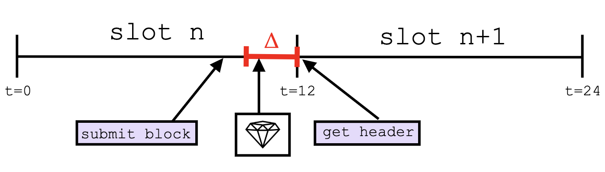→ Optimistic Relay Proposal
by Mike Neuder
https://github.com/michaelneuder/optimistic-relay-documentation/blob/main/proposal.md
==========================================================================================
2021
→ Strategic Liquidity Provision in Uniswap v3
by Michael Neuder, Daniel Moroz, Rithvik Rao, and David C. Parkes
https://arxiv.org/pdf/2106.12033.pdf
------------------------------------------------------------------------------------------
→ Detection of Local Mixing in Time-Series Data Using Permutation Entropy
by Michael Neuder, Elizabeth Bradley, Edward Dlugokencky, James W. C. White and Joshua Garland
https://arxiv.org/pdf/2010.12384.pdf
==========================================================================================
2020
→ Low-cost attacks on Ethereum 2.0 by sub-1/3 stakeholders
by Michael Neuder, Daniel Moroz, Rithvik Rao, and David C. Parkes
https://arxiv.org/pdf/2102.02247.pdf
------------------------------------------------------------------------------------------
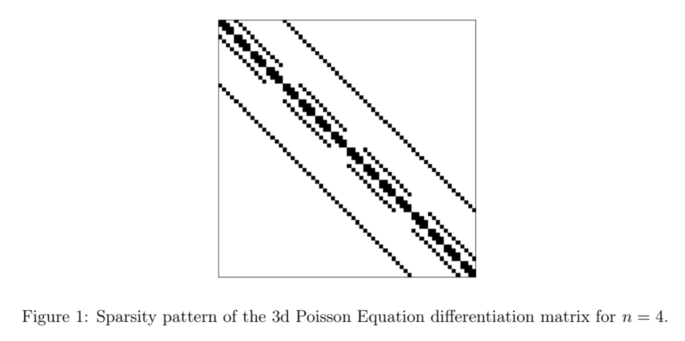→ Implementing Mixed-Precision Iterative Refinement in STRUMPACK
by Michael Neuder
strumpack.pdf
------------------------------------------------------------------------------------------

→ Defending Against Malicious Reorgs in Tezos Proof-of-Stake
by Michael Neuder, Daniel Moroz, Rithvik Rao, and David C. Parkes
https://arxiv.org/pdf/2009.05413.pdf
==========================================================================================
2019
→ Selfish Behavior in the Tezos Proof-of-Stake Protocol
by Michael Neuder, Daniel Moroz, Rithvik Rao, and David C. Parkes
https://arxiv.org/pdf/1912.02954.pdf
------------------------------------------------------------------------------------------
→ An information-theoretic approach to extracting climate signals from deep polar ice cores
by Joshua Garland, Tyler R. Jones, Michael Neuder, James W. C. White, and Elizabeth Bradley
https://aip.scitation.org/doi/pdf/10.1063/1.5127211
==========================================================================================
2018

→ Anomaly Detection in Paleoclimate Records Using Permutation Entropy
Joshua Garland, Tyler R. Jones, Michael Neuder, Valarie Morris, James W. C. White, and Elizabeth Bradley
https://www.mdpi.com/1099-4300/20/12/931
------------------------------------------------------------------------------------------